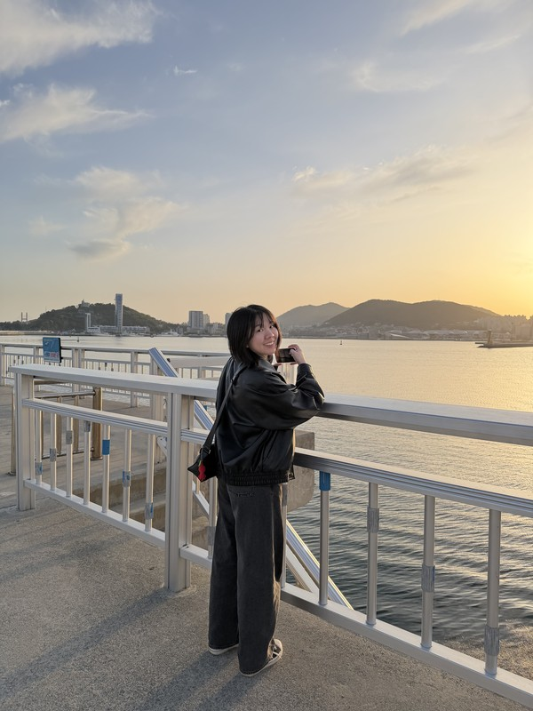

ICLR
2026
OmniText: A Training-Free Generalist for Controllable Text-Image Manipulation
* Equal contribution · † Co-corresponding authors · International Conference on Learning Representations, 2026

Ph.D. Student, Video and Image Computing Lab (VIC Lab), KAIST
Advisor: Prof. Munchurl Kim
I am a Ph.D. student at the Video and Image Computing Lab (VIC Lab), KAIST, advised by Prof. Munchurl Kim. Before joining KAIST, I worked as an R&D engineer at the AI Center of China Medical University Hospital in Taiwan, where I built machine-learning systems for clinical decision support, including an AI system for sepsis detection and mortality prediction deployed in hospital practice. I received my M.S. in Electrical Engineering from City University of Hong Kong and my B.S. from Southeast University (Nanjing, China).
My research interests include image editing and controllable generative models, as well as skeleton representation learning and motion generation.
OmniText: A Training-Free Generalist for Controllable Text-Image Manipulation
* Equal contribution · † Co-corresponding authors · International Conference on Learning Representations, 2026
MotionGrounder: Grounded Multi-Object Motion Transfer via Diffusion Transformer
arXiv preprint, 2026
What Makes a Good Motion Tokenizer for 3D Human Motion Generation?
* Equal contribution · Under review, 2026
Skeleton Aware Augmentation for Skeleton Representation Learning
Korea Institute of Broadcast and Media Engineers (KIBME) Workshops, Jun. 2026
Attention Modulation for Improved Textual Alignment in Motion Transfer
Korea Institute of Broadcast and Media Engineers (KIBME) Workshops, Dec. 2025